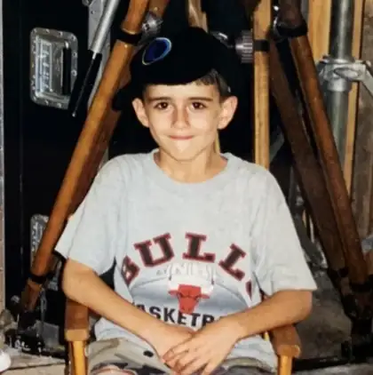

STORYTELLING. CREATIVE DIRECTION. PRODUCTION
MaxGrunner
Award-winning Creative Producer and Video Director
IN FOCUS / CHEWY × GET REAL
Get Real: Pool Day
POOL DAY / DIRECTOR / 2026
01 / 03A FEW RECENT FAVORITES
COMPANY


Award-winning Creative Producer and Video Director

I’m Max, a Creative Producer and Video Director with 15 years of experience creating branded, documentary, social, and product-focused content.
Currently, I serve as a Senior Content Director on Chewy's Brand Creative team, where I partner with marketers to bring briefs to life from concept through final delivery. My work spans everything from unscripted, documentary-style storytelling to commercial-style product content.
Before Chewy, I helped build video and content functions in fast-moving startup and media environments, including UnitedMasters and Elite Daily. That background shaped the way I work today: resourceful, collaborative, hands-on, and focused on making strong creative without unnecessary complexity.